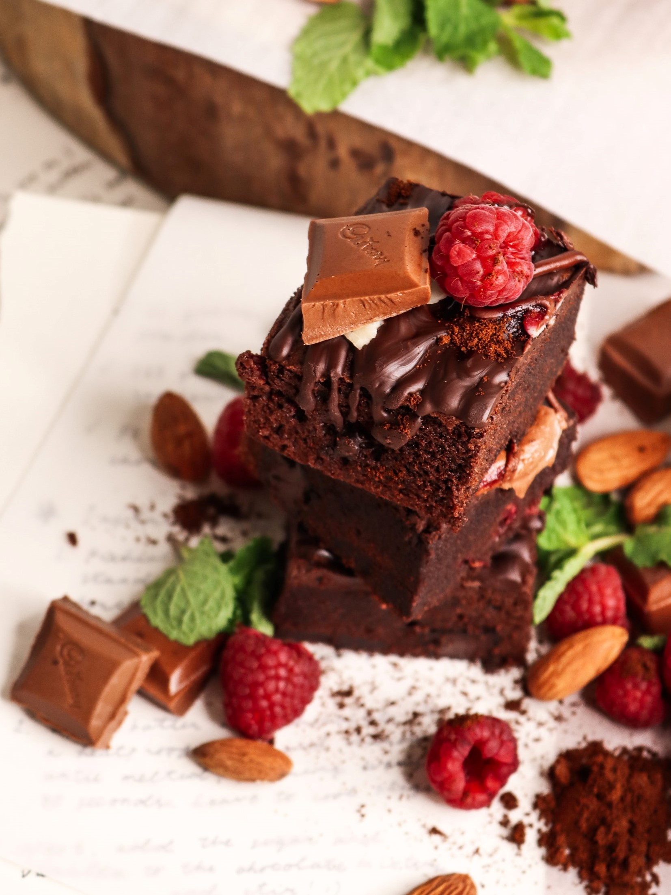

- 하승희를 한 단어로 표현한다면?
- [자유]
- [소비]
- [사과와 용서]
- [성숙]
- [시간]
- 크클살롱
하승희를 한 단어로 표현한다면?
[초콜릿]

그 이유는?
우선 저는 사람들이 '너만큼 초콜릿을 좋아하는 사람은 본 적이 없다'고 말할 정도로 엄청난 초콜릿 러버입니다.
뿐만 아니라 초콜릿의 특성이 저를 잘 표현한다고 생각합니다! 초콜릿은 판 초콜릿처럼 그 자체로도 많은 사랑을 받지만, 녹아서 다른 재료들과 섞이면 케이크나 쿠키 등 다른 디저트로 재탄생하기도 해요.이처럼 어떤 상태로든 본연의 맛과 색을 지키면서도 여러 재료들과 부드럽게 잘 어우러지는 모습이 저와 많이 닮았다고 생각합니다 :)